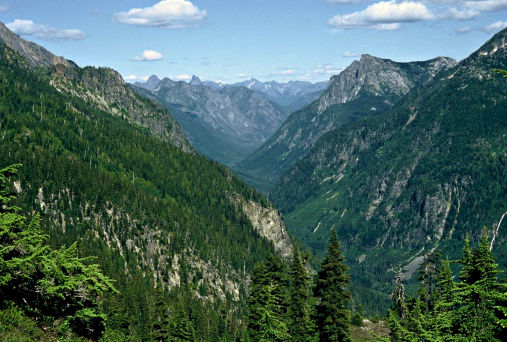

Experience the thrill of the great outdoors!
Each of the locations will have some sort of visual aid to look at as the guide explains the topic. The cast members will ask different questions and involve everyone in the learning process. Our favorite locations were ones where we could see animals close by as we learned more about them and their habitat, such as the tigers. Did you know that tigers are one of the most endangered animals in the world due to deforestation?
Here are a few tips and tricks for Wilderness Explorers!
1. You can receive a handbook and your first badge at many stations besides the front headquarters. If you miss it on your way in or change your mind, you don't have to backtrack.
2. The Wilderness Explorers stations are typically staffed for the majority of the park day, usually starting a few hours after park open and ending an hour before park close, so plan ahead to get some badges done in the afternoon.
3.Some of the stations are off the beaten path, so you truly get to explore the nooks and crannies of Animal Kingdom you might have missed otherwise.
4.The cast members are great about tailoring the activities to be age-appropriate. They will explain the topic differently to a young tadpole than they would to a tween frog like me.
5.Sometimes there may be short lines while waiting for a badge opportunity. We found that the lines moved pretty quickly and sometimes we would join with other groups for one big learning experience. If a group had already started, we would just wait our turn and get a nice, personal experience.
6.The cast members are specifically trained in their field of study and are very knowledgeable. The Frog Family loves asking questions from the awesome guides!